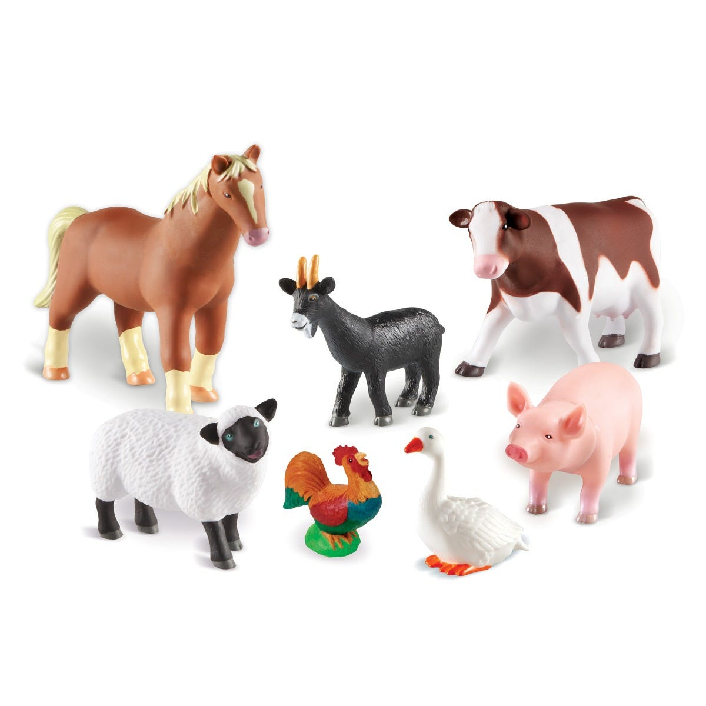

Animal Farm

Goal:
Method calls. Call a method that shows an image and makes the sound of an animal as selected by the user in a pop-up.
Steps:
- Ask the user to enter the name of an animal on this farm.
- Use if statements to call the method that matches the animal they chose.
- Loop the program so the user can choose more than one time.
- Test your code to make sure all animal choices work correctly.
- What happens if the user does not enter the name of an animal on the farm?